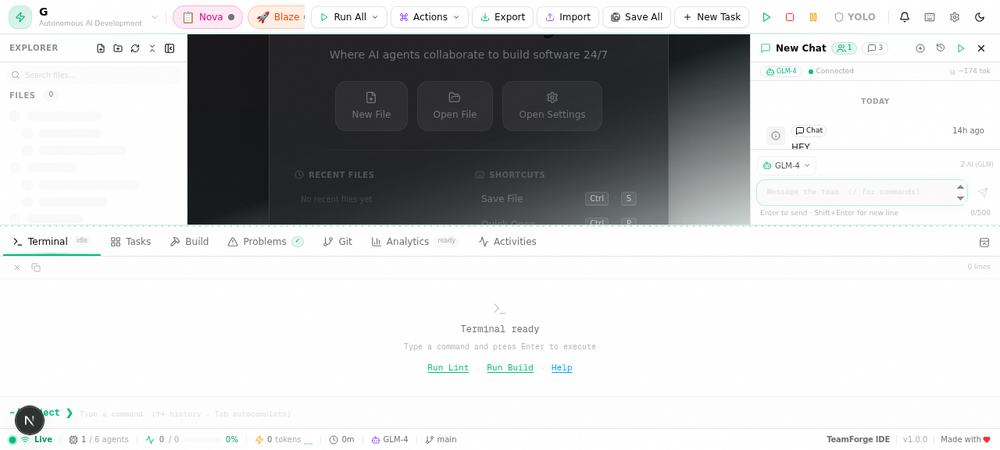

| Atlas | Architect — System design, specs |
| Codey | Developer — Code implementation |
| Prism | Reviewer — Code review, security |
| Flux | Tester — Tests, edge cases |
| Blaze | DevOps — Deploy, CI/CD |
| Nova | PM — Coordination, tasks |
| Z-AI (GLM-4) | Default, best integration |
| NVIDIA NIM | 80+ free models |
| OpenAI-Compatible | Custom endpoints |
/edit | Edit code |
/run | Execute commands |
/fix | Fix errors |
/commit | Git commit |
/deploy | Deploy project |
TeamForge IDE is a next-generation autonomous agentic development platform that integrates six specialized AI agents, a multi-provider AI chat system, a virtual file system (VFS), and intelligent workflow orchestration into a single cohesive environment. Unlike traditional IDEs, TeamForge delegates complex development tasks to AI agents that can plan, code, review, test, and deploy autonomously — while keeping you in full control.
At its core, TeamForge uses GLM-4 models from Zhipu AI (via the z-ai-web-dev-sdk) as the default AI provider. It also supports NVIDIA NIM (80+ free models) and any OpenAI-compatible API endpoint, giving you flexibility to choose the AI backbone that suits your needs.
/help in the chat input to see all available commands, or /edit to request an AI-powered code edit.TeamForge IDE works with any project structure. To set up a project:
/create_file command or manually create files. The VFS supports all standard file types including .js, .ts, .py, .rs, .go, .html, .css, and more./commit slash command or the terminal to manage version control operations.TeamForge IDE features a modern, panel-based layout designed for maximum productivity. The interface is divided into five primary zones, each serving a distinct purpose in the development workflow.

The top bar provides global navigation and status information. It displays the project name (click to switch between recent projects), agent status indicators (colored dots showing which agents are active, idle, or processing), the YOLO Mode toggle, a theme toggle for light/dark switching, and the settings gear icon.
The left sidebar provides quick access to project resources:
| Section | Description |
|---|---|
| File Explorer | Browse the project's VFS tree. Click any file to open it in the editor. Right-click for context actions (rename, delete, duplicate). |
| Search | Global search across all project files. Supports regex and case-sensitive modes. Results update in real-time as you type. |
| Git | View changed files, diffs, and commit history. Stage, unstage, and commit changes directly from the sidebar. |
| Agent Panel | Quick-access buttons to assign tasks to specific agents or view agent activity logs. |
The central editor supports multiple open files via tabs with syntax highlighting for 50+ languages, intelligent code completion powered by AI, inline error markers, and minimap navigation. Use Ctrl+\ for split-view side-by-side editing.
The right-side chat panel is your primary interface for interacting with AI agents. It displays the current conversation thread, model selector, and agent assignment. You can drag the panel border to resize it. The chat supports markdown rendering, code blocks with syntax highlighting, and inline file references.
| Component | Description |
|---|---|
| Terminal | Integrated terminal supporting bash/zsh/PowerShell. AI agents can execute commands here. Toggle with Ctrl+`. |
| Output | Displays build output, linting results, and agent task logs. Filterable by source. |
| Problems | Aggregated list of errors and warnings across the project, sorted by severity. |
| Status Bar | Shows current file language, line/column position, Git branch, AI model in use, and connection status. |
TeamForge IDE deploys six specialized AI agents, each designed for a specific phase of the software development lifecycle. All agents are powered by GLM-4 models and can be configured to use NVIDIA NIM or OpenAI-compatible providers.
Designs system architecture, creates technical specifications, and plans project structure. Best for high-level design decisions, technology selection, and breaking down complex features into implementable components.
Writes and modifies code based on specifications. Handles core implementation — from scaffolding new files to implementing complex algorithms. Understands project context through the VFS and follows existing patterns.
Performs code reviews, identifies bugs, security vulnerabilities, and style violations. Provides detailed feedback with line-level annotations and suggests specific fixes. Enforces coding standards across the codebase.
Generates and runs test suites, identifies edge cases, and ensures code quality. Writes unit, integration, and end-to-end tests. Can execute tests via the terminal and analyze failures to suggest targeted fixes.
Manages deployment pipelines, Docker configurations, CI/CD workflows, and infrastructure. Builds containers, pushes images, configures environments, and handles release management.
Coordinates tasks across agents, tracks progress, and manages timelines. Breaks down user stories, assigns work to the appropriate agent, monitors completion, and provides status reports.
You can direct tasks to specific agents in three ways:
@Codey Add input validation to the login form. The named agent picks up the task immediately.Review the auth module for security issues auto-routes to Prism.For complex multi-step tasks, agents collaborate through Nova's orchestration. When you request "Build a user registration feature", Nova may: assign Atlas to design the registration flow and data schema; assign Codey to implement the frontend form and backend API; assign Flux to write and run tests; assign Prism to review the final code before merge. Each agent's output is visible in the chat panel, and you can intervene at any step.
The AI Chat is your primary interaction point with TeamForge's intelligence layer. It supports multi-turn conversations, code-aware context, and real-time streaming responses. The model selector at the top of the chat panel lets you switch between providers mid-conversation.
| Provider | Models | Setup | Notes |
|---|---|---|---|
| Z-AI (GLM-4) | GLM-4, GLM-4-Plus, GLM-4-Flash | API key in Settings | Default provider. Best agent integration. Powered by Zhipu AI's z-ai-web-dev-sdk. GLM-4-Flash for quick tasks. |
| NVIDIA NIM | 80+ free models (Llama, Mistral, Qwen, etc.) | NVIDIA API key | Free tier available. Great for experimentation. Select from dropdown after configuring your key. |
| OpenAI-Compatible | Any OpenAI chat completions API endpoint | Base URL + API key | Works with vLLM, Ollama, LM Studio, Azure OpenAI, Together AI, Fireworks AI, and more. |
TeamForge maintains a complete history of all chat sessions, organized by project and date. You can resume previous conversations or start fresh ones at any time.
The chat system automatically provides AI agents with relevant project context: open files in the editor are included in the context window; selected code is auto-referenced (also use @filename syntax); project structure from the VFS tree; and terminal output (errors, logs) when relevant.
@filename to explicitly reference any project file in the VFS.
Slash commands are powerful shortcuts that trigger specific AI-powered actions directly from the chat input. Type / to see the autocomplete menu, or type the full command with your request.
| Command | Purpose | Description & Usage |
|---|---|---|
| /help | Show help | Displays the complete list of available slash commands with brief descriptions. Use when you forget a command name. |
| /run | Execute code | Runs the current file or a specified command. Example: /run python main.py executes in the terminal. The agent monitors output and reports results. |
| /edit | Edit code | Requests an AI-powered code edit. Describe the change: /edit Add error handling to fetchData. Shows a diff for review (or applies directly in YOLO Mode). |
| /explain | Explain code | Asks the AI to explain the selected code or current file. Provides line-by-line analysis, design rationale, and identifies potential issues. |
| /fix | Fix errors | Automatically diagnoses and fixes errors. The agent reads error messages, identifies root causes, and generates patches. Example: /fix TypeScript errors in auth.ts |
| /refactor | Refactor code | Restructures code without changing behavior. Supports renaming, extracting functions, simplifying conditionals, and design pattern application. |
| /optimize | Optimize perf | Analyzes code for performance bottlenecks and suggests or applies optimizations. Covers algorithmic complexity, memory usage, caching, and async patterns. |
| /search | Search code | AI-powered semantic search across the entire project. Understands intent. Example: /search Where is user authentication handled? |
| /commit | Git commit | Stages all changes and creates a commit with an AI-generated message based on the diff. Provide context: /commit Include the new caching layer |
| /status | Project status | Displays current project state: active agents, pending tasks, recent changes, test status, and errors/warnings. |
| /create_file | New file | Creates a new file in the VFS with AI-generated boilerplate. Example: /create_file src/utils/logger.ts. Infers template from extension and project context. |
| /run_tests | Execute tests | Discovers and runs the project's test suite. Analyzes results, reports failures with diagnostics, and suggests fixes. Supports Jest, pytest, Go test, and more. |
| /deploy | Deploy | Initiates deployment through the configured pipeline. Blaze (DevOps) handles build, containerization, and deployment. Supports Docker, cloud platforms, and custom scripts. |
/edit Add validation; /run_tests; /commit performs all three actions sequentially, each using the previous step's output.
YOLO Mode is TeamForge's autonomous execution mode. When enabled, AI agents operate without confirmation prompts — they can modify files, execute terminal commands, run tests, and make project changes directly. The name reflects the "You Only Live Once" philosophy: maximum speed, minimal friction.
/yolo in the chat to toggle the mode.| Behavior | Normal Mode | YOLO Mode |
|---|---|---|
| File modifications | Agent shows diff; you click "Apply" | Agent modifies files directly |
| Terminal commands | Agent shows command; you click "Run" | Agent executes immediately |
| Test execution | Agent proposes run; you approve | Agent runs tests and reads output |
| Git operations | Agent shows message; you confirm | Agent commits with generated message |
| Multi-agent tasks | Each handoff requires approval | Agents hand off seamlessly |
| Deployment | Agent prepares; you trigger | Agent deploys directly |
The VFS is TeamForge's in-memory file layer that provides instant access to all project files for both you and the AI agents. It operates transparently — you interact with files normally, and the VFS handles synchronization between memory and disk.
/search command uses this for semantic search./create_file path/to/file.ext to have an agent generate a file with appropriate boilerplate./edit or @Codey to request modifications. In normal mode, edits show as a diff preview before applying.TeamForge includes a fully functional terminal at the bottom of the interface. Toggle with Ctrl+`. The terminal supports multiple sessions — click "+" to open additional instances. AI agents can execute commands when authorized (or automatically in YOLO Mode).
/run <command> to have an agent execute and monitor a command./run (e.g., /run npm run build) or directly in the terminal./run npm run build (or equivalent). Blaze can detect your project type and suggest the correct build command./run_tests to execute the test suite. Flux analyzes failures and suggests fixes.@Prism Review the latest changes for a quality check before deploying./commit to stage and commit with an AI-generated message./deploy and Blaze handles the rest: containerization, image push, and deployment.Open Settings via the gear icon in the top bar or Ctrl+,. The Settings panel is organized into tabs for each provider.
build.nvidia.com).https://api.your-provider.com/v1).meta-llama/llama-3-70b).| Action | Windows/Linux | macOS | Context |
|---|---|---|---|
| New file | Ctrl+N | Cmd+N | Global |
| Open file / folder | Ctrl+O | Cmd+O | Global |
| Save file | Ctrl+S | Cmd+S | Editor |
| Save all files | Ctrl+Shift+S | Cmd+Shift+S | Global |
| Find in file | Ctrl+F | Cmd+F | Editor |
| Find in project | Ctrl+Shift+F | Cmd+Shift+F | Global |
| Replace | Ctrl+H | Cmd+H | Editor |
| Toggle terminal | Ctrl+` | Cmd+` | Global |
| Toggle sidebar | Ctrl+B | Cmd+B | Global |
| Toggle chat panel | Ctrl+Shift+C | Cmd+Shift+C | Chat |
| Split editor view | Ctrl+\ | Cmd+\ | Editor |
| New chat session | Ctrl+Shift+N | Cmd+Shift+N | Chat |
| Send chat message | Enter | Enter | Chat |
| Newline in chat | Shift+Enter | Shift+Enter | Chat |
| Open Settings | Ctrl+, | Cmd+, | Global |
| Toggle YOLO Mode | Ctrl+Shift+Y | Cmd+Shift+Y | Global |
| Toggle theme | Ctrl+Shift+T | Cmd+Shift+T | Global |
| Close current tab | Ctrl+W | Cmd+W | Editor |
| Switch tabs | Ctrl+Tab | Cmd+Tab | Editor |
| Go to line | Ctrl+G | Cmd+G | Editor |
| Command palette | Ctrl+Shift+P | Cmd+Shift+P | Global |
| Undo / Redo | Ctrl+Z / Ctrl+Shift+Z | Cmd+Z / Cmd+Shift+Z | Editor |
| Quick open file | Ctrl+P | Cmd+P | Global |
| Issue | Possible Cause | Solution |
|---|---|---|
| AI agents not responding | API key missing, invalid, or expired | Open Settings and verify your API key under the active provider. Click "Test Connection" to check. If using Z-AI, ensure your Zhipu AI account has sufficient credits. |
| Slow AI responses | Large context window or high-demand model | Switch to GLM-4-Flash for faster responses. Close unnecessary files to reduce context size. For NVIDIA NIM, try a smaller model (e.g., Llama 3 8B instead of 70B). |
| Agent edits not applying | Normal mode requires manual approval | Check the chat panel for a pending diff preview. Click "Apply" to accept changes, or enable YOLO Mode for automatic application. |
| NVIDIA NIM connection fails | Invalid API key or network issue | Verify your NVIDIA API key at build.nvidia.com. Check firewall settings. Ensure the endpoint URL is correct in your configuration. |
| Custom endpoint not working | Incorrect Base URL or format mismatch | Ensure the Base URL ends with /v1 and follows the OpenAI chat completions format. Test with curl first to confirm the endpoint is reachable. |
| File changes not persisting | Changes saved in VFS but not to disk | Press Ctrl+S to save the current file. Use Ctrl+Shift+S to save all files. Enable auto-save in Settings. |
| Terminal not responding | Process hung or terminal session crashed | Click the trash icon to terminate the current process. Open a new terminal session with the "+" button. Check if a long-running process is blocking. |
| Chat history missing | Session expired or storage cleared | Check the chat history panel (clock icon). Pinned sessions persist longer. Consider exporting important conversations. |
/help command in the chat, or describe your problem to Nova (the PM agent) who can guide you through diagnostics and connect you with the right agent for resolution.
| Error | Meaning | Resolution |
|---|---|---|
API_KEY_INVALID | The provided API key is not recognized by the provider | Double-check your key for typos. Regenerate the key from the provider dashboard if needed. |
MODEL_NOT_FOUND | The selected model ID does not exist on the provider | Verify the model ID matches the provider's catalog. For NVIDIA NIM, check build.nvidia.com for available models. |
CONTEXT_LENGTH_EXCEEDED | The conversation exceeds the model's context window | Start a new chat session to reset the context. Close unnecessary editor tabs to reduce the automatic context payload. |
VFS_SYNC_ERROR | The virtual file system cannot sync with disk | Check file permissions. Ensure no other process has locked the files. Restart the IDE if the issue persists. |
@Codey Fix the bug, say @Codey Fix the null reference error in UserService.ts line 42. Specificity reduces agent iteration cycles./commit frequently to create checkpoints. This makes it easy to revert if an agent makes unintended changes.